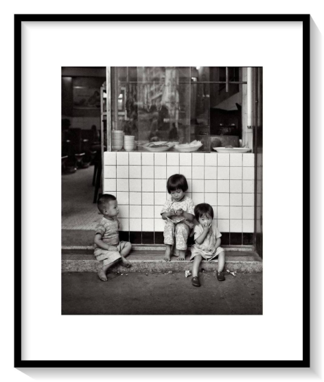
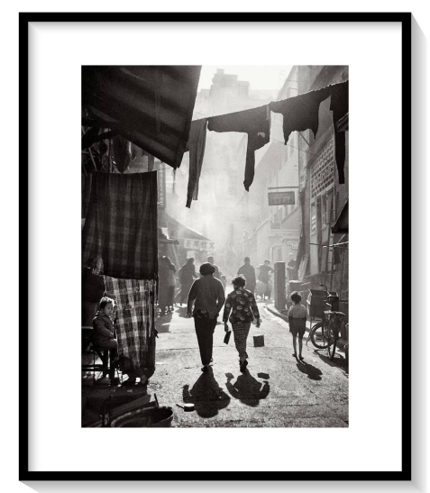
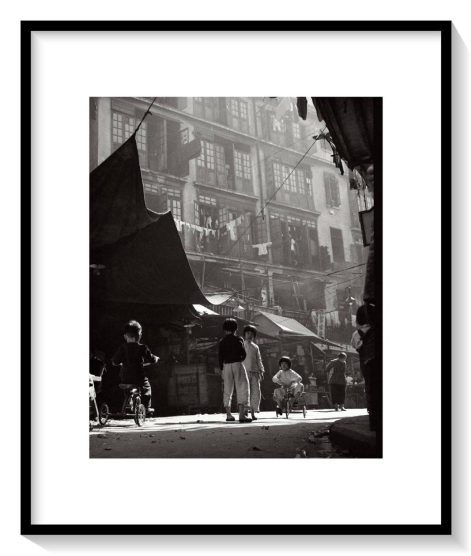
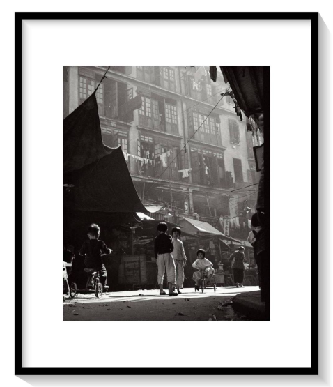

FAN HO GALLERY
Fan Ho (8 October 1931 - 19 June 2016) was a Chinese photographer, film director, and actor. From 1956, he won over 280 awards from international exhibitions and competitions worldwide for his photography.
-



